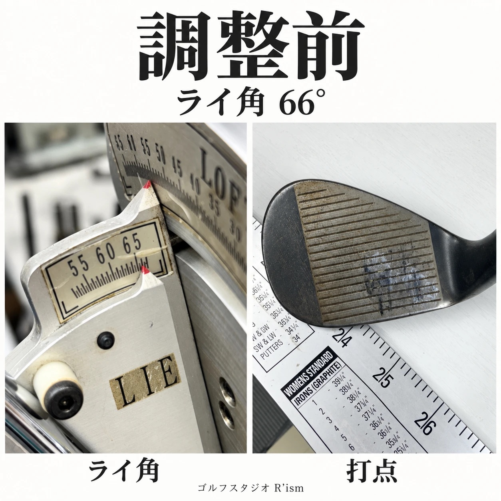
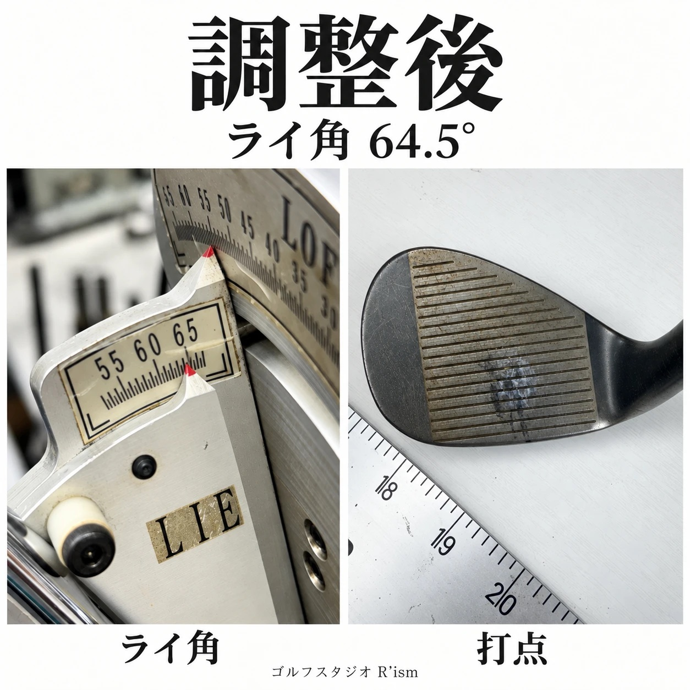

ライ角1.5°で、打点はこんなに変わる


クラブの調整で打点が変わった例をご紹介します。題材は、私自身のウェッジです。
最近、なんだか構えづらくて気持ちが悪い。シャンクも出るし、構えが変わったのか、スイングのせいなのか……と考えていました。
打点を確認すると、かなりヒール寄り。
そこで思い出しました。以前、試しにライ角を66°に変えていたのを、すっかり忘れていたんです（笑）
元の64.5°に戻して打ってみると、構えの違和感がなくなり、打点も写真のように中央付近へ。
気づかないうちにクラブに合わせようとして、構えやスイングにまで悪い影響が出ていました。たった1.5°でも、これだけ変わります。
構えづらい、芯に当たりにくいなど、気になることがあれば工房で調整できます。
同じようなお悩みは、お気軽にご相談ください。
会員以外の方も工房をご利用いただけます。